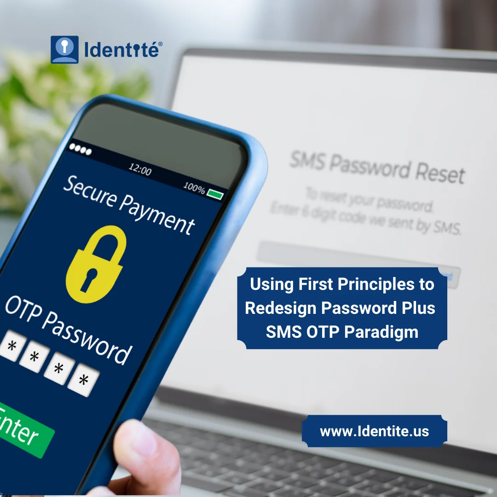

Most everyone is familiar with Elon Musk and SpaceX. Elon used first design principles to reimagine the space rocket industry. Breaking down the basic components of a rocket and designing a practical reusable version resulted in a revolutionary way to transport humans and supplies into space.
When I look at the most used multi-factor authentication (MFA) process, which is password plus SMS OTP, I can use a first principles approach to diagram something that is easier for the end user and much more secure. Now before I start tearing down what has become somewhat of an institutional process, let’s look at how password plus SMS OTP got started and why it worked.
Authentication started with username and password, and this is the first type of authentication – something a user knows. When applications that require a user to authenticate moved to the internet, bad actors quickly came up with methods to acquire these passwords. Hacking into corporate networks and stealing passwords from the central database using sophisticated techniques was one method. Another was to use software viruses whose sole job was to install a keystroke logger, which would replicate on the internet and find their way to a person’s personal computer. Eventually, rather than try to find someone skilled to write these sophisticated software programs, an easier way to get the password was to just ask the user for it. By creating fake websites and programs that the user thought was legitimate, bad actors could obtain the passwords faster.
Thus, the password method needed something else. In the corporate world, companies bought hardware devices that generated a one-time a visible numeric passcode (OTP), usually 6-8 digits. The OTP was only valid for that session for a limited time – usually less than 3 minutes and the user would quickly enter the OTP right after the password. Because the user had to be in possession of the special hardware device that generated valid OTP’s, this was labeled as a second type of authentication - something a user has. The downside of this method was that it was expensive to implement and cost prohibitive for anyone but high-level corporate access or users of high value goods and services such as banking and investments.
Around the time that most folks had their own personal mobile device capable of sending and receiving text messages, the concept of generating an OTP on a central server and sending that code to a mobile device quickly became a cost-effective alternative to the expensive hardware devices. To most folks, delivering the OTP via the cellphone was good enough and no one really noticed that the type of authentication had actually reverted to something a user knows. In fact, there was no difference in the level of security if you were in possession of a hardware device generating a valid OTP or the mobile device receiving the SMS OTP because the challenge to the user was what they knew – the code displayed on the device.
If a site or application requires a password and a valid OTP, this is still multi-factor authentication and much more secure than using just a password – right? Not exactly. This is because bad actors now recreate the entire login experience, which includes asking for the OTP as well. The problem with password plus SMS OTP is that it all relies on the first type of authentication – something a user knows. The most secure multi-factor authentication will require all three types – something a user knows, something a user has and something a user is (biometric).
So, let’s use first principles to breakdown and redesign authentication to use all three types of authentication. In the password plus SMS OTP method we have a web or application dialogue that asks the user who they are. We have a mobile device where the user receives a valid OTP. What can we build with those two things that will employ all three types of authentication.
First, the dialogue in the web or application will ask for the username so the first method, something a user knows is checked off our list. Since phone is something the user possesses, let’s look at what is possible with that device. Today, most everyone has a smartphone. Thanks to our telecommunications providers, these smartphones have sophisticated operating systems and secure hardware environments that are not easily cloned. Each smartphone user will load personal applications that install from app stores. So, by creating an app that securely communicates directly with an authentication server, a check for something a user has can be completed. Finally, a smartphone almost always has a biometric so the last check can be performed as well – something a user is.
The result of our first principles redesign of the password plus SMS OTP process is a PasswordFree® multi-factor authentication process that employs all three types of authentication.To enhance and provide phishing-resistant authentication, Identité adds a patented process called Full Duplex Authentication®. By putting technology to work to perform user and device verification, user on-boarding and verification is much easier without the password and SMS OTP. If your users are already required to provide a password and SMS OTP, they are already used to relying on their mobile device to complete the multi-factor authentication process. Why not move to an easier and more secure method. Your new and existing users can easily transition with just a look, click or a tap.